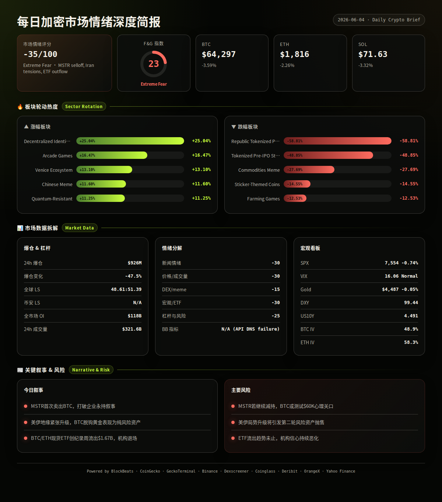
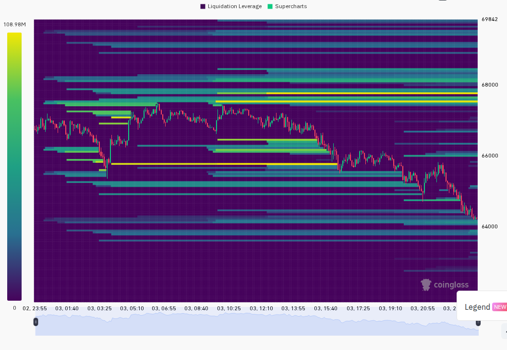
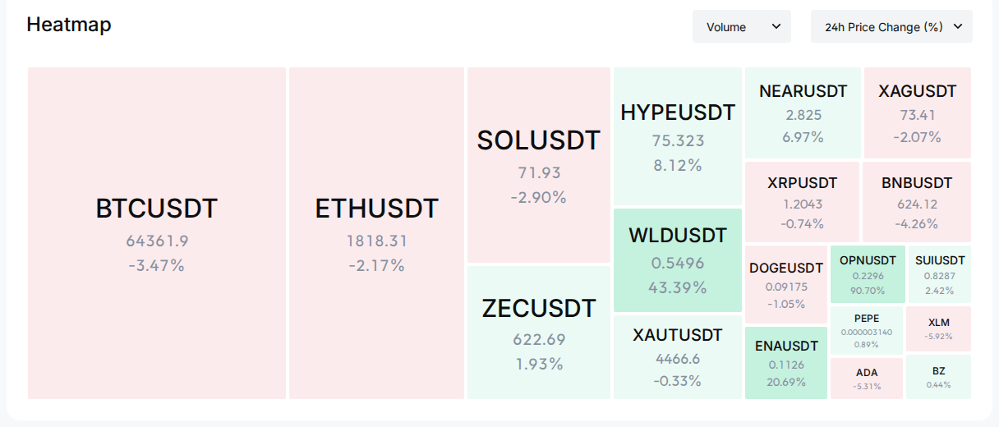

=== 第一段：叙事与风险面 ===
加密市场遭遇2026年以来最猛烈的一次多因素共振下跌。Strategy（原MicroStrategy）首次出售BTC的行为动摇了"永不卖出"的企业叙事，叠加美伊地缘紧张升级、BTC/ETH现货ETF创纪录周度流出$1.67B，三重冲击将BTC砸至四个月低点$64,092，全市场24h爆仓$926M。尽管少数赛道（DID、隐私币、AI应用）逆势上涨，整体情绪处于极度恐惧，成交量暴增126%显示恐慌性抛售特征。
24h变化: 情绪 -35(极度恐惧) | BTC ↘3.6% | ETH ↘2.3% | SOL ↘3.3% | VIX 16.1(正常) | 成交量 ↗126% | 爆仓 ↘47.5% (multi-source)
【BTC/ETH/SOL — 多重利空共振引发抛售】
信息 1: BTC在6月3日暴跌至四个月低点$64,092，日内最大跌幅超6%，为2026年以来最大单日跌幅。Strategy（MicroStrategy）首次出售BTC持仓是核心叙事冲击，动摇了市场对其"永不卖出"的信仰。(web搜索/Cryptotimes)
信息 2: 美伊紧张局势升级，地缘风险溢价涌入黄金和美元，风险资产全面承压。黄金仅微跌0.05%，与BTC的3.6%跌幅形成鲜明对比，BTC与黄金脱钩，表现为纯风险资产。(Yahoo Finance, web搜索)
信息 3: 全市场24h爆仓$926M，但较前一日已下降47.5%，空头占比51.4%略高于多头48.6%，卖压可能正在衰竭。(Coinglass)
【ETF/宏观/监管 — 创纪录资金流出】
信息 4: 全球加密ETP上周净流出$1.67B，为2026年第二大周度流出，其中BTC基金单独流出$1.44B创年度纪录。BTC ETF已连续多周净流出，机构避险情绪浓重。(web搜索/EdgeN/Bitcoin Foundation)
信息 5: SPX收于7553.68，24h跌0.74%；VIX 16.06处于正常区间上沿(15-20)；DXY升至99.44(+0.22% 24h)；US10Y升至4.491%(+3.6bp 24h)。宏观环境对风险资产不利。(Yahoo Finance)
信息 6: 黄金$4,486.80近乎持平(-0.05% 24h)，与BTC走势背离，说明当前抛售非系统性流动性危机，而是加密市场特有的叙事驱动。(Yahoo Finance, analysis)
【板块轮动 — DID与隐私赛道逆势暴涨】
信息 7: DID赛道24h暴涨+25.04%，由Worldcoin(WLD +40%)主导，或与AI身份认证叙事有关。(CoinGecko)
信息 8: 隐私币赛道+9.99%、抗量子赛道+11.25%，由Zcash(ZEC)引领。衍生品赛道+6.99%，HYPE和LIT涨幅居前。(CoinGecko)
信息 9: 下跌最惨板块：代币化Pre-IPO资产-58.81%、大宗商品Meme-27.69%、贴纸主题币-14.55%，均为流动性稀薄的小众赛道，暴跌反映风险偏好急剧收缩。(CoinGecko)
【DeFi/安全/Meme】
信息 10: Worldcoin(WLD) 24h暴涨+40%，成交量$1.25B，为全市场最热标的。Venice Token(VVV)涨+13.7%延续AI叙事。Lighter(LIT)涨+10.1%受益于衍生品赛道轮动。(CoinGecko)
信息 11: Mt. Gox相关地址再次出现大额转账传闻，加剧供应端恐慌。虽未确认，但历史上每次Mt. Gox消息均引发抛售。(web搜索)
风险 1: Strategy(MSTR)持续卖出BTC → 观察: 若MSTR在$64K以下继续减持，市场可能测试$60K心理关口；失效条件: 若MSTR声明停止卖出或仅为一次性调仓，恐慌将缓解。(web搜索, analysis)
风险 2: 美伊局势进一步升级 → 观察: 若有军事冲突迹象，加密市场可能再跌5-10%追随风险资产；失效条件: 外交渠道取得突破或停火协议。(web搜索, analysis)
风险 3: ETF流出趋势未止 → 观察: 若明日ETF继续净流出>$500M，BTC可能跌破$63K支撑；失效条件: 若出现单日净流入或流出缩至<$100M。(web搜索, analysis)
风险 4: 爆仓量虽降47.5%但绝对额仍达$926M → 观察: 若爆仓量进一步降至<$300M且多空比回升至50:50以上，卖盘可能耗尽；失效条件: 若明日爆仓量反弹至>$1B。(Coinglass, analysis)
风险 5: BTC.D升至55.27% → 观察: BTC主导地位上升在下跌市中意味着山寨币比BTC跌得更惨，流动性向BTC集中。若BTC.D突破56%，山寨币可能面临第二轮去杠杆。(CoinGecko, analysis)
风险 6: US10Y升至4.491%，DXY走强 → 观察: 若10Y突破4.5%且DXY突破99.5，流动性将进一步收紧，不利所有风险资产。(Yahoo Finance, analysis)
非财务建议声明: 本报告仅提供市场数据和情绪分析，不构成任何买卖建议。
6月4日 (周三) — 美国ADP就业数据 + ISM服务业PMI — 若数据强于预期→加息预期升温，利空；若弱于预期→衰退担忧，亦利空。中性偏空。(analysis)
6月5日 (周四) — 美国初请失业金数据 — 持续关注劳动力市场健康状况。(analysis)
6月6日 (周五) — 美国非农就业数据 + 失业率 — 5月非农为FOMC前最后一份就业报告，若大幅偏离预期将剧烈影响风险资产。(analysis)
6月7日 (周六) — BTC期权月度到期 (Deribit 7JUN) — 名义价值较大，到期前后波动率可能上升。(Deribit, analysis)
本周 — 美伊局势外交进展 — 持续关注。任何缓和信号将是加密市场短期反弹的最大催化剂。若恶化则继续承压。(web搜索, analysis)


=== 第二段：数据与技术面 ===
综合评分: -35/100 — 极度恐惧主导，多重利空共振，但爆仓量快速下降暗示卖盘可能接近阶段性枯竭。
5项分项评分:
新闻情绪: -30/100 — MSTR首次卖出BTC打破"永不卖出"叙事，美伊地缘紧张，ETF创纪录流出$1.67B，Mt. Gox供应恐慌。(web搜索, analysis)
价格/成交量: -30/100 — BTC跌破$65K至四个月低点，ETH失守$1,820，SOL跌破$72。成交量暴增126%为恐慌性抛售信号，但放量下跌后往往酝酿反弹。(Binance, CoinGecko, analysis)
DEX/meme活跃度: -15/100 — WLD(+40%)和DID赛道(+25%)提供局部热点，但整体DEX流动性收缩。GeckoTerminal Solana趋势池和新增池数据不可用（API 404），无法评估链上活跃度全貌。(CoinGecko, GeckoTerminal, analysis)
宏观/ETF/流动性: -30/100 — ETF周度净流出$1.67B创2026年纪录，DXY升至99.44，US10Y升至4.491%，SPX跌0.74%。风险资产全面承压，加密首当其冲。(Yahoo Finance, web搜索, analysis)
杠杆与风险: -25/100 — 24h爆仓$926M但已下降47.5%，空头占比51.4%略高于多头48.6%。BTC期货轻微贴水(mark < index 0.04%)。OI仅微降0.56%说明杠杆尚未完全出清。(Coinglass, Binance, analysis)
BlockBeats 底部/顶部指标: BlockBeats API DNS解析失败(api.blockbeats.ai NXDOMAIN)，底部/顶部综合指标数据本日不可用。
BTC: $64,297，24h -3.59%。24h区间 $64,092 ~ $67,516。从1h蜡烛观察，亚洲早盘从$66,920跌至$65,850，欧洲时段一度反弹至$67,516后持续走低，美洲时段最低触及$64,092后小幅回升至$64,396。期货轻微贴水: mark $64,372 vs index $64,397，差值-$25(-0.04%)，情绪中性偏空。(Binance, CoinGecko)
ETH: $1,816.06，24h -2.26%。24h区间 $1,769.62 ~ $1,893.07。跌幅相对BTC更小，ETH/BTC比率略有回升。从$1,769低点反弹至$1,850后再度回落至$1,820附近，$1,800为关键心理支撑。期货轻微贴水: mark $1,818.79 vs index $1,819.52，差值-$0.73(-0.04%)，中性。(Binance, CoinGecko)
SOL: $71.63，24h -3.32%。24h区间 $70.93 ~ $75.71。走势弱于ETH，略强于BTC。从$70.93低点反弹至$72.86后回落。期货轻微贴水: mark $71.98 vs index $72.02，差值-$0.04(-0.06%)，Solana期货资金费率-0.0118%轻微为负，情绪偏空。(Binance, CoinGecko)
全球: 总市值$2.32T，24h -2.69%。24h总成交量$321.6B，较前日+126.2%，高量下跌。BTC.D 55.27%，BTC主导地位上升说明山寨币跌幅更深。(CoinGecko)
衍生品杠杆（来自CoinGecko衍生品，覆盖所有交易所）: BTC/ETH/SOL的CoinGecko衍生品ticker数据返回不完整，无法提取所有交易所资金费率极值。Binance端: BTC资金费率+0.0030%，ETH +0.0079%，SOL -0.0118%。SOL资金费率为负是看空信号。总OI $118.1B，仅微降0.56%，市场杠杆尚未充分出清。(CoinGecko, Binance, Coinglass)
爆仓数据: 24h全市场爆仓$926.3M，较前日下降47.52%。多头占比48.61%，空头占比51.39%。空头略占优说明市场处于恐慌性下跌后期，而非空头碾压性主导。(Coinglass)
多空比(全球): 多头48.61% vs 空头51.39%，空头小幅领先。Binance Top Trader多空比数据不可用（Coinglass scraped data未包含此字段）。整体多空结构偏向空头但非极端。(Coinglass)
跨平台OI (BlockBeats合约数据): BlockBeats API不可用，Binance/Bybit/Hyperliquid OI对比数据本日缺失。
宏观看板:
SPX 7553.68，24h -0.74%，5日趋势横盘偏弱。(Yahoo Finance)
VIX 16.06，正常区间(15-20)，但处于区间上沿，反映市场不安。(Yahoo Finance)
DXY 99.44，24h +0.22%，7日+0.54%，美元走强对风险资产不利。(Yahoo Finance)
US10Y 4.491%，24h +3.6bp，7日持平。收益率走高压缩风险资产估值。(Yahoo Finance)
黄金 $4,486.80，24h -0.05%，5日-1.62%。BTC与黄金走势背离——黄金近乎持平而BTC大跌3.6%，说明当前抛售非宏观流动性危机，而是加密市场特有的叙事驱动（MSTR卖币+ETF流出+Mt. Gox恐慌）。BTC表现为纯风险资产而非数字黄金。(Yahoo Finance, analysis)
期权波动率 (Deribit):
BTC ATM IV: 48.86% (7JUN26 64500C)，处于正常区间(40-60%)上沿，接近"Elevated"边缘。短期IV高于远期，期限结构呈现Backwardation，反映短期恐慌。(Deribit)
ETH ATM IV: 58.25% (7JUN26 1850C)，处于正常区间上沿(40-60%)，但接近60%阈值。ETH-BTC IV利差+9.39%，未超过15%的投机溢价阈值，说明当前并非山寨币投机狂热，而是全面性恐慌。(Deribit)
关注标的需要同时满足: CoinGecko趋势榜Top15且24h涨幅>+5%，有叙事支撑。以下为符合条件的热门标的（注: Dexscreener多链搜索返回的DEX配对数据可靠性不足，部分代币的链上数据以CoinGecko信息为准）:
WLD (Worldcoin / ETH主网 + 多链): $0.535，24h +39.96%，市值$1.81B。24h成交量$1.25B为全市场最高之一。Dexscreener主网配对数据异常（Solana桥接版本价格和成交量偏离过大），以CoinGecko为准。催化剂: DID赛道+25%领涨全市场，AI+身份认证叙事共振。风险: 40%的日内涨幅后回调风险极高，且WLD代币通胀模型持续解锁。(CoinGecko, analysis)
VVV (Venice Token / Base链): $20.77，24h +13.70%，市值$969M。成交量$125M。催化剂: Venice AI生态赛道+13.1%，隐私AI推理叙事持续发酵。风险: 短期涨幅已大，Base链上流动性相对有限。(CoinGecko, analysis)
LIT (Lighter / ETH主网): $1.77，24h +10.14%，市值$442M。成交量$126M。催化剂: 衍生品赛道(+6.99%)轮动，Lighter为去中心化永续合约协议。ETH主网Uniswap配对流动性$419K，24h成交量$1.15M，买卖比364:435，卖方略多。风险: DEX流动性偏薄，大额交易滑点大。(CoinGecko, Dexscreener, analysis)
NEAR (NEAR Protocol / 多链): $2.83，24h +8.09%，市值$3.67B。成交量$1.35B极为活跃。催化剂: "AI区块链"定位清晰，AI Agent叙事持续。风险: 市值较大，弹性有限，需AI赛道持续热络方可维持。(CoinGecko, analysis)
HYPE (Hyperliquid / 自有L1): $74.45，24h +7.20%，市值$16.6B。成交量$1.33B。催化剂: 衍生品赛道领跑，Hyperliquid生态持续扩展。Solana Raydium配对流动性$1.52B，24h成交量$732K。风险: 大盘下跌市中HYPE保持了相对强势，但若BTC继续下跌，补跌风险存在。(CoinGecko, analysis)
ONDO (Ondo Finance / 多链): $0.416，24h +7.58%，市值约$2.4B。催化剂: RWA赛道代表，机构级真实资产代币化叙事。风险: 涨幅在大盘下跌中显得突出，可能是短期资金轮动而非基本面变化。(CoinGecko, analysis)
· GeckoTerminal Solana趋势池: API返回404错误（端点可能已变更），无法获取Solana 24h趋势池数据。建议手动查看GeckoTerminal网站或等待API恢复。
· GeckoTerminal Solana新池(48h): API返回404错误，无法获取。新池筛选标准(>$50K流动性 + >$100K 24h成交量)的数据不可用，跳过本小节。
· Solana链上净流入(Top10): BlockBeats API DNS解析失败，Solana top10_netflow数据本日不可用。
基于以上全部数据，未来24-48小时最可能的三个情景:
情景 1 (概率: 50%，置信度: 高): 惯性下探后震荡筑底。BTC在$63,000-$64,000区间寻求支撑，若$63K不破则形成短期底部。关键条件: MSTR不再发出进一步卖出信号，且美伊局势不出现明显升级。若发生则BTC目标: $63,500-$65,000，ETH: $1,780-$1,850。成交量暴增126%后爆仓降47.5%暗示卖盘动能可能正在衰竭，支持此情景。(analysis)
情景 2 (概率: 35%，置信度: 中): 继续下探$60K-$62K区间。若ETF明日继续大额流出(>$500M)或美伊局势升级，BTC可能跌破$63K支撑加速下行。关键条件: ETF流出趋势延续+地缘风险升温+DXY突破99.5。若发生则BTC目标: $60,000-$62,000，ETH: $1,680-$1,750。当前极度恐惧+期货贴水支持空头环境，但跌幅已大限制了进一步下行空间。(analysis)
情景 3 (概率: 15%，置信度: 低): V型反弹至$67K+。触发条件极为苛刻: 需美伊紧张显著缓和+ETF流出逆转+MSTR声明停止卖出三者至少其二同时出现。若发生，空头挤压可能将BTC推回$67,000-$68,000，ETH至$1,900-$1,950。支持因素: 爆仓量快速下降+成交量暴增暗示恐慌盘已大量出清，短期超卖信号存在。但概率较低。(analysis)
以上为基于当前数据的概率判断，不构成交易建议。